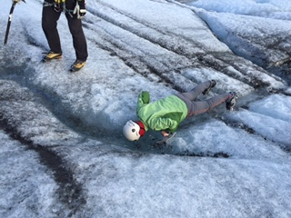

Me drinking water from Skaftafell glacier in Iceland.
- Dreamer | Minimalist
- Programmer | Reader
- The title of this blog is inspired by a stand up show from Simon Amstell.
- GitHub
A self reminder
- Spend time reading docs, slowly.
- Code slowly. Think, then code.